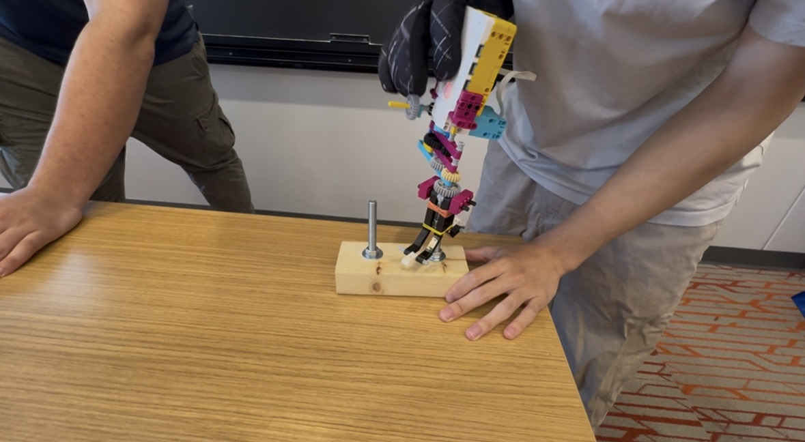

This project centered around human factors engineering and designing around the user. Our goal was to make a tool that could unscrew, screw, and carry a hex nut from two threaded screws. I was inspired by the functinoalitiy of electric gryoscopic screwdrivers that automatically changed the direction and speed of the motor based on the, orientation of the tool. I thought about using the IMU as a way to detect the orientation, using yaw for horizontal drilling, roll for vertical, and pitch to differentiate between the horizontal and vertical orientation. During the actual competition, I came into some problems such as, the roll detection being unreliable due to how i programmed it, drilling straight down and up was significantly harder than horizontally. I believe that I had overengineered my design and that a simpler electric power drill design would have been more effective. The tool was also difficult to hald since there wasnt a frame to really hold onto it.
# Setup: motor on port A; use the hub's motion sensor for roll.
from hub import port, motion_sensor, light
import motor
import runloop
import color
import force_sensor
async def main():
# Keep checking the roll so the motor can respond to changes.
while True:
# Convert the roll reading from decidegrees to degrees.
roll = motion_sensor.tilt_angles()[2] / 10
pitch = motion_sensor.tilt_angles()[1] / 10
yaw = motion_sensor.tilt_angles()[0] / 10
if (pitch > 50 or pitch < -50): # check if pitch is roughly 90 (facing upwards)
oro = yaw
elif(pitch > -15 or pitch < 15): # check if pitch is roughly 0 (flat)
oro = roll
else:
oro = 0
if force_sensor.pressed(port.C) and (oro >= 25 or oro <= -25):
motor.run(port.A, int(oro * 10))
else:
# Run the motor when the roll is outside that range.
motor.stop(port.A)
# update the LED green to show its going clockwise and red if its going counterclockwise
# Stop the motor when the roll is between -10 and +10 degrees.
if oro < -25:
light.color(light.POWER, color.GREEN)
elif oro > 25:
light.color(light.POWER, color.RED)
else:
light.color(light.POWER, color.YELLOW)
# Pause briefly before checking again.
await runloop.sleep_ms(50)
runloop.run(main())